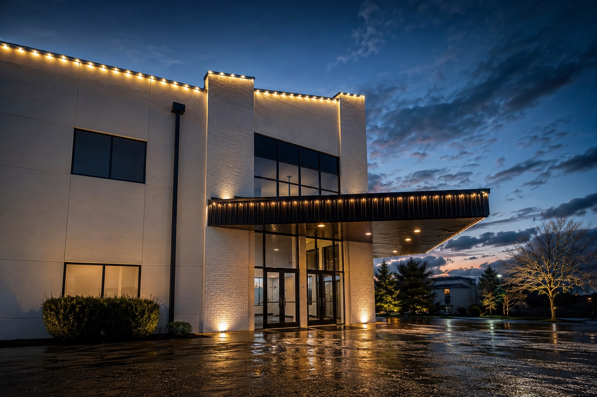

Project background
Spray GenX completed exterior painting work at Five39 Church in Akron. The project included the church’s broad exterior elevations, central tower and cross feature, with access and production planned around the scale and configuration of the building.
Exterior scale and access
Large institutional exteriors are not handled as a collection of isolated walls. Lift positioning, surface condition, weather exposure, masking, sequencing and visual continuity all affect the final result. The work had to progress methodically while maintaining a consistent appearance from one elevation to the next.
On a building this size, the finish is judged from the parking lot as much as it is from the lift. Color continuity, clean architectural lines and uniform coverage have to hold together across the entire structure.
Project photography

Execution priorities
The focus was careful preparation, dependable access planning and consistent exterior coating application. The tower, cross, masonry-textured features and long wall sections required deliberate sequencing so completed areas tied together visually.
Why this record matters
Five39 Church is a strong example of Spray GenX’s ability to organize and complete substantial church and institutional exterior work in Northeast Ohio. The project reflects real field experience with elevated access, large elevations and visually prominent architecture.